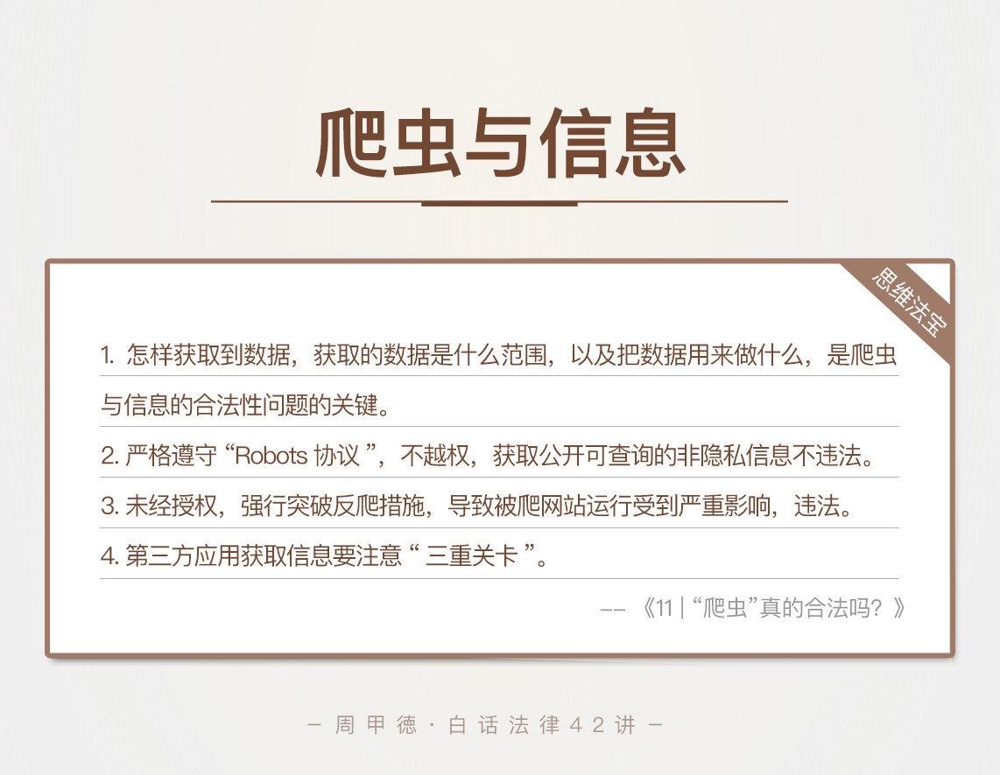

- 00 开篇词 这年头，你真应该懂点法律常识.md.html
- 01 “老周，我想知道” 常见法律认知盲区（一）.md.html
- 02 “老周，我想知道” 律师就在你身边（二）.md.html
- 03 “老周，我想知道” 律师就在你身边（三）.md.html
- 04 “老周，我想知道” 律师就在你身边（四）.md.html
- 05 创业未捷老板跑，社保工资哪里讨？.md.html
- 06 保密还是“卖身”，霸王条款怎么看？.md.html
- 07 编造流言蹭热度？看守所里降温度！.md.html
- 08 合同在手欠款难收，报警有用吗？.md.html
- 09 致创业：谁动了我的股权？.md.html
- 10 又见猝死！工“殇”究竟是不是工伤？.md.html
- 11 期权的“前世今生”.md.html
- 12 裁员面前，你能做的还有什么？.md.html
- 13 抄袭、盗图为什么做不得？.md.html
- 14 加班、工资、休假，你知道多少？.md.html
- 15 受贿原来这么“容易”.md.html
- 16 今天你用“VPN”了吗？.md.html
- 17 漏洞在眼前，可以悄悄破解吗？.md.html
- 18 “爬虫”真的合法吗？.md.html
- 19 非法集资到底是个啥？.md.html
- 20 黄色网站？不仅仅是“黄色”罪名.md.html
- 21 谁修改了我的积分资产？.md.html
- 22 外挂真能大吉大利吗？.md.html
- 23 如何看待“从删库到跑路”？.md.html
- 24 “伪基站”是你的避风港吗？.md.html
- 25 “网络诈骗”真的离你很远吗？.md.html
- 26 智斗中介：“北上广”租房图鉴.md.html
- 27 买买买！买房的“避坑”指南.md.html
- 28 闪婚又闪离，彩礼怎么理？.md.html
- 29 离婚还想和平？你要这么做.md.html
- 30 遗产继承的爱恨情仇.md.html
- 31 骗术升级？假结婚、假离婚的那些事儿.md.html
- 32 孩子学校受伤，谁之过？.md.html
- 33 如何让欠债还钱真正“天经地义”？.md.html
- 34 从透支到盗刷：人人须知的银行卡纠纷.md.html
- 35 远离“套路贷”的套路大全.md.html
- 36 危险！酒驾为什么被罚那么重？.md.html
- 37 老人倒地，“扶”“不服”？.md.html
- 38 “能动手就别吵吵”，代价你真的知道吗？.md.html
- 39 发生交通事故，如何处理？.md.html
- 40 交通事故综合法宝.md.html
- 41 婚姻家庭综合法宝.md.html
- 42 买卖房屋综合法宝.md.html
- 一键直达 法律专栏“食用”指南.md.html
- 加餐 “新冠肺炎”影响下，17个常见法律问题解答.md.html
- 结束语 法律，不会终止的篇章.md.html
- 捐赠
18 “爬虫”真的合法吗？
平常生活中，我们经常会接到一些骚扰电话，开口就是“张先生”、“李女士”，接着就是“您想看看XX的房源吗？”、“您需要XX的汽车售后服务吗？”，不仅知道你的姓名、电话，连你最近的行程记录都了如指掌。
因为这些人神机妙算吗？当然不是，自然是信息和数据的问题。除了传统模式，信息管理人员的违法泄漏外，更多的是通过爬虫技术，爬取你在网上留下的痕迹，然后进行分析和利用。数据时代，爬虫技术水涨船高。但是，你手头的爬虫工作真的合法吗？我想，这是很多人关心的问题。
我的一个朋友小瑞就遇到过这样的事情。他跟朋友合伙开发了一个软件，提供免费的视频观看服务。视频从哪儿来的呢？他们购买了爱奇艺的VIP账号，然后爬取所有的视频并下载下来，再放到他们的软件上免费看。视频不收费，那么收益从哪里来呢？自然是软件流量的广告费用。
小瑞他们心里美滋滋，觉得自己只是“分享”爱奇艺的视频，应该不算违法。这岂不是既不犯法、又能赚钱的美事儿？正准备继续大干一场时，他们收到了爱奇艺的律师函，小瑞这才慌了。
那么，小瑞当初的想法到底对不对呢？
用VIP账号爬取了视频资源分享，并不直接卖钱，会违法吗？
如果未经授权获取信息，合法吗？
如果信息是公开免费的，就一定可以用爬虫的方式获取吗？
再或者是，合法爬取的信息，就可以任意使用了吗？
这些“如果”，应该也是你很关心的问题。同样的，我们先来学几个可能涉及的法律知识，再来分析这些情况。
法律知识
首先我来解释跟信息相关的两个重要概念。
开头说到的骚扰电话，主要是因为获取了我们的一些个人信息，也就是法律上所讲的“公民个人信息”。公民个人信息，指以电子或者其他方式记录，能单独或结合其他消息，识别出某人身份或者反映某人活动情况的信息，包括姓名、身份号码、各种联系方式、住址、账号密码、财产状况和行踪轨迹等。
第二个概念，侵犯公民个人信息罪，任何单位和个人，违反国家有关规定，获取、出售或者提供公民个人信息，情节严重的，都构成犯罪。而且罪名判定跟是否获利无关，只要你提供给了别人，不管你有没有获利，情节严重的都属于刑事犯罪。
如果是在履行职责或者在提供服务的过程中，获取到的个人信息，再出售或者提供给别人，更是会从重处罚。
接下来，我们来看商业方面的一个概念，不正当竞争。不正当竞争的定义来自于《反不正当竞争法》，指经营者违反本法规定，损害其他经营者的合法权益，扰乱社会经济秩序的行为。
需要注意的是，不正当竞争的定罪对象是“经营者”，不管你是否有合法的营业执照，只要从事商品经营或者营利性服务的单位和个人，都属于这个范围。
情景分析
回过头来看我们开头说到的两个例子。第一个，骚扰电话的信息问题。这些信息的获得，除了传统模式，也就是管理人员的违法泄漏外，更多的是利用网站漏洞，通过爬虫获取，然后传播或者出售。
这种“爬虫”的出发点就是为了获利，被不法分子用来推销或诈骗，而且信息本身也都属于隐私，显然构成了侵犯公民个人信息罪。
事实上，作为开发者，如果你明知别人让你编写程序，是为了套取信息获利，你可能构成共犯；如果你自己爬取信息，然后卖给诈骗犯罪份子，甚至可能会成为诈骗的共犯，更加严重。
根据最新的司法解释，定罪门槛大幅降低。一般人提供50条高度敏感信息就可以定罪，如果是从事金融、电信、医疗等部门的人员，提供工作中获得的高度敏感信息的，25条就够定罪了。基本上触碰获利就可能构成犯罪，所以作为技术人员，提供技术服务还是要有足够的警觉啊。
第二个，小瑞的故事。小瑞用软件传播爱奇艺的付费视频，利用的是爱奇艺的市场资源。他们基本不用付出什么成本，就凭借着提供跟爱奇艺相同的视频体验，获得了内容上的竞争优势。
他们虽然没有直接把视频卖钱，但是未经爱奇艺的授权获取了视频资源，并且他们获得的流量和广告费用，也都是基于这种优势。这种行为显然违背了诚实公平的商业伦理，也破坏了市场秩序，抢占了爱奇艺的市场机会，损害其利益。所以小瑞他们的行为已经属于不正当竞争。
当然，因为小瑞软件的规模和流量还比较小，所以爱奇艺在勒令停止后，并没有进一步的追责。其实正是爱奇艺的及时发现并制止的行为，挽救了小瑞。小瑞如果不刹车，接下来的行为就可能涉嫌犯罪了（比如侵犯著作权罪，这个会在专栏里专门讲述）。
事实上，不是所有人都像小瑞这么幸运，一些知名公司已经因为数据信息问题被告上了法庭，也有很多人为此承担刑事责任。
思维“法”宝
爬虫在我看来，本质仍是一种工具，一种用机器人代替人手操作、搜集信息提高效率的工具。既然是工具，就像我在前面说到过的“菜刀无罪”的例子，技术本身没问题。究竟是怎么获取到的数据，获取数据范围是什么，以及把数据用来做什么，才是爬虫与信息的合法性问题的关键。
那么，根据《中华人民共和国网络安全法》和一些相应的案例，在这里简单总结一下我的看法。
第一，如果你爬取信息，严格遵守“Robots协议”，没有任何越权的行为，搜集的也是公开可以查询的非隐私级的信息。那么，你的行为基本不会违法。其实很多网站也很希望数据被抓取，比如被百度或者Google的爬虫采集。
另外，需要强调的是，“Robots协议”本身并没有法律效力，但在行业内大家基本都会遵守，法院的判案也越发看重这一点。所以这类爬虫不难理解，没有恶意，也并不攫取非公开类的信息，虽然有时会遭到反感，但是并不违法，也是互联网发展必须的技术。
第二，如果你爬取信息，是为了证明被爬公司的数据造假，其获取的数据也都是通过公开渠道可以查询的，那么，在获取信息后公布于众的行为并不违法，也不侵犯被爬公司的民事权益。但是，如果你爬取公开免费的信息，是用来进行违法操作，比如造假、诽谤等，就有隐患了。
第三，如果你利用爬虫获取其他公司的公开信息数据，用于自身公司的经营。而被爬公司的信息是投入了大量人力、财力，经过常年积累获得的，并且被爬公司本身也采取了反爬措施。这种情况下，虽然信息是公开的，但信息本身具有较高的商业价值，能够给使用者带来商业利益，此时的爬虫也是违法的。
第四，如果你未经平台授权，强行突破反爬措施，导致被爬网站的运行受到严重影响，这种行为明显是违法的，这里涉及的就是我们上一个技术篇讲到的破解犯罪了。
第五，如果你是第三方应用，想要通过开放平台获取用户信息时，更要注意授权问题。从用户对平台的授权、平台对第三方的授权、再到用户对第三方的授权，三重关卡都要通过才合法。

这些都是常见的爬虫使用和获取信息的问题。其实，除了技术人员的非法获取，我们自身信息被泄露的情况很是恶劣，购房信息、网购信息、住宿记录、车辆信息等都可能会遇到。
我们也要增强个人信息的保护意识，比如：
不要随便点击电脑或者手机上的陌生链接；
网购时尽量使用化名，丢弃外包装时，尽量消除上面的个人信息；
不要随意办理会员，如果不是特别正规或者没有很大的优惠，尽量不要办理。
虽然网络让生活越发透明，但还是希望你能保护好自己的隐私，也不要用技术去侵犯他人的隐私和商业秘密。对于今天所学，你有哪方面特别深刻的经历和体会吗？欢迎留言和分享，也欢迎你转发给身边的朋友。
© 2019 - 2023 Liangliang Lee. Powered by gin and hexo-theme-book.